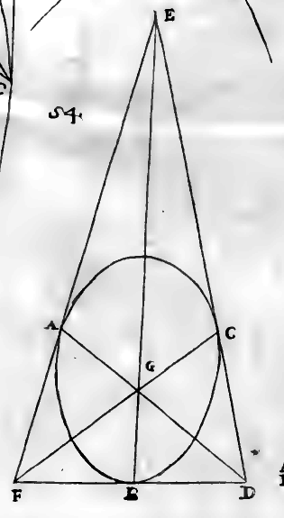

Proposition XIV: Concurrency on Three Tangents to a Circle or Ellipse¶





Proposition XIV · Theorem XII (pp. 49–51, Tab. 6, Figs. 52–54 & Tab. 7, Figs. 55–56)
If two lines touching a circle or an ellipse produced meet one another, and from another point taken on the section another tangent be drawn, dividing the former two, and their points of contact and points of division be joined by two mutually intersecting lines; and then from the point of intersection a line be drawn to the meeting point of the first tangents, this line produced (when need be) will pass through the remaining point of contact, so that the resulting figure resolves into at least two figures of the First Element.
Let ABC be the circumference of an ellipse or circle touched by two lines AF and CD, which produced meet at E;
f. 0067 · p. 50and having drawn another tangent FBD cutting tangent AE at F and CE at D, let the two lines AD and CF be joined, dividing one another at G. Now having drawn EG and produced it (when need be), I say it passes through the remaining contact point B.
For if the three tangents form a triangle circumscribed about the proposed ellipse or circle, I have already shown this in the first proposition of this Second Book. But if the tangent FBD cuts the other two AFE and CDE between their contacts A, C and their meeting point E, I shall show this also by reduction to what cannot be. For let EG joined not pass (if possible) through contact B, but through N; and having drawn another tangent KIL produced both ways together with EAK and ECL to form triangle EKL touching the circle or ellipse at A, I, C, let AL and KC be joined, intersecting one another at M. Since ENG is a single straight line, the two figures EDCGFN and EFAGDN belong to the First Element; and therefore line FN to FD—that is, weight D to N—is compounded from the ratios of weights D to E to N, namely of the lines CE to CD and GN to GE; and likewise in the other figure of the First Element, line FD to ND—that is, weight N to F—namely the two ratios of weights N to E to F, arise from the ratios of the lines GE to GN and AF to AE: therefore the two ratios FN to FD to ND, that is FN to ND, will be compounded from the ratios CE to CD, GN to GE to GN, and AF to AE, that is, from the ratios CE to CD and AF to AE.
Moreover (by Book II, Prop. I), KI to IL is compounded from the ratios EC to CL and KA to AE; and the same ratio is also compounded from the ratios DC to CL, FB to BD, and KA to AF; but EC to CL is compounded from the two EC to DC to CL; and likewise KA to AE is compounded from the ratios KA to AF and AF to AE; therefore the ratio compounded from EC to DC to CL and KA to AF to AE will equal that compounded from DC to CL, FB to BD, and KA to AF. Taking away therefore on both sides the ratios DC to CL and KA to AF, the remaining ratio FB to BD will be compounded from the ratios EC to DC and AF to AE. But, as I have shown, FN to ND is also compounded from these same ratios; therefore as FN to ND, so FB to BD; and by composition, FD to ND will be as the same FD to BD, and therefore ND will equal BD—the whole equal to the part—which is absurd; therefore ENG will pass through contact B, Q.E.D.
f. 0068 · p. 51Corollary (Tab. 7, Figs. 55 & 56)
It is evident both in the ellipse and in the circle that FB is to BD as the ratio compounded from CE to CD and AF to AE.